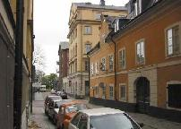

|
10. Mäster Mikaels gata 4, Nytorgsgatan 11 De hjärteknipande små trähusen vid Mäster Mikaels Gata drar med rätta uppmärksamheten till sig så att hörnhuset Nytorgsgatan 11 får svårt att konkurrera om intresset. Den för trakten unika byggnaden med dess markerade fönsterinramningar och utsmyckade väggstycken, kom ursprungligen till 1879. Det var det året då August Strindberg tog ett extra steg fram i rampljuset med Röda Rummet. I den får Katarina församling lämna stoff till skildringen. Det är en annan epok som träder fram vid anblicken av elvans dekorativa kolonnrad framför övervåningen på gaveln mot Mäster Mikaels Gata. Arrangemanget doftar 1920-tal. Påbyggnad gjordes också i slutet av detta decennium med tangering av nästa. År 1893 var fastigheten på Nytorgsgatan 11 taxerad till 197 000 kronor och ägdes av bagaren Vilhelm Lindfeldt. Denne drev bagerirörelse med bod i samma kvarter. Verksamheten var inte obetydlig. Ett bodbiträde, sex drängar, fem pigor och sju bageriarbetare var anställda hos honom. 1893 var hans årsinkomst inte mindre än 9 500 kronor. För en beskattningsbar inkomst på 6 400 kronor betalade han 1046 kronor i skatt. Han erlade av toppinkomsten drygt 10 procent i skatt! Bageriarbetarna fick troligen hålla till godo med 700-800 kronor i årslön. Någon skatt var det knappast tal om för deras del. Nytorgsgatan 11 innehöll flera stora lägenheter, varav den dyraste drog en hyra på 850 kronor om året. Vem hade råd att betala så mycket? Jo, det hade ägaren till Tryckfärgs- och Valsmassefabriken vid Värmdögatan 63 (Malmgårdsvägen), Vilhelm Lagerholm. |
 Han var filosofie licentiat men titulerades doktor. Med en årsinkomst på 3 000 kronor hade han visserligen en betydligt mindre summa än hyresvärden att deklarera för. Inkomsten kan ändå betraktas som god för den tiden. Lagerholm hade hustru och fem barn att dra försorg om. Hyresgästerna i elvan var år 1893 alla av borgerligt stånd med undantag av arbetskarlen Carl J Johansson. Han arbetade hos Karlström & Ekman, hade 700 kronor i årslön och betalade 200 kronor i hyra, eller närmare 30 procent av inkomsten. |